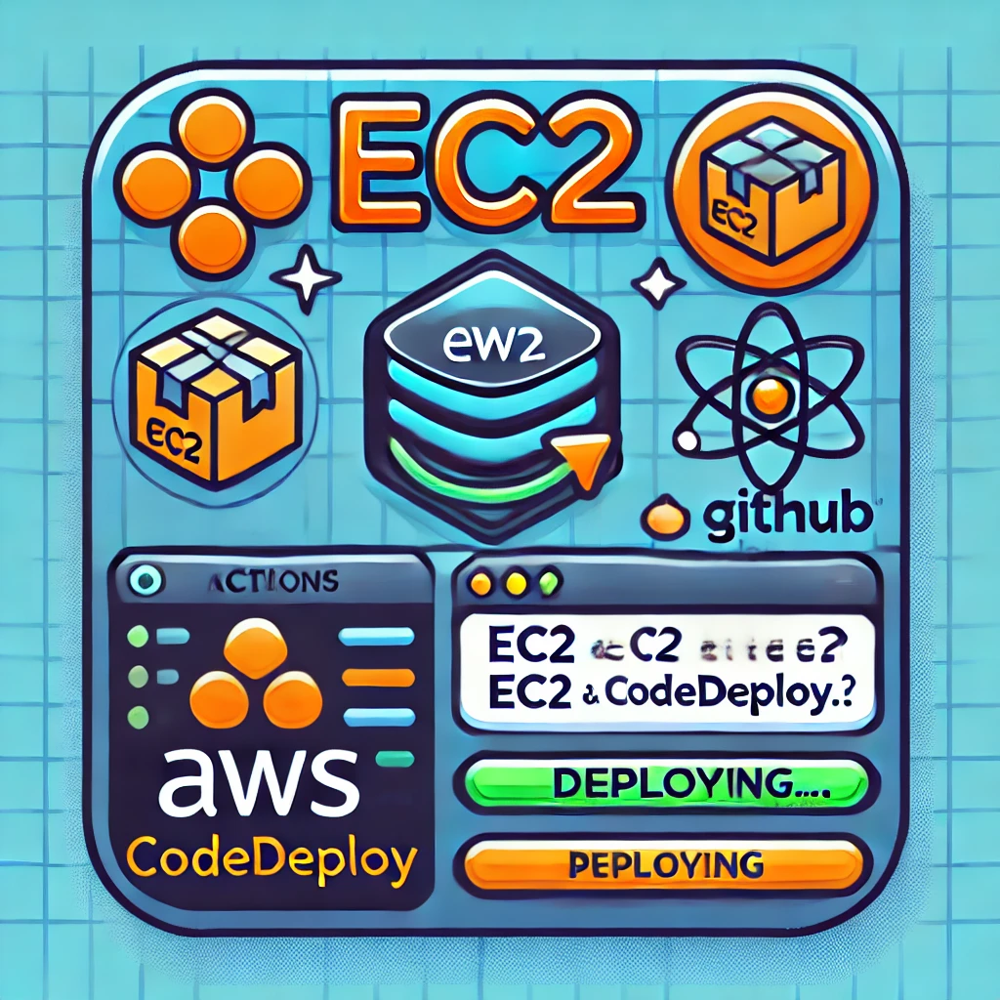

일이 있을 때만 켜지는 10개의 ec2 그룹이 있다.
평소 꺼져 있다 보니 git action - code deploy 자동화가 적용되지 않는다.
(인스턴스가 중지되어 있을 때는 code deploy가 안됨)
아이디어: 켜지자마자 최근 deploy를 재배포 받으면 되지 않을까?
실행1: User Data에 작성
결과1: 실패, User Data는 인스턴스 최초 1회 실행에만 적용된다고 한다
728x90
실행2: rc.local 실행
sudo nano /etc/rc.local#!/bin/bash
bash /var/lib/cloud/instance/scripts/part-001
exit 0sudo chmod +x /etc/rc.local결과2: 성공, CodeDeploy 콘솔에서 배포 결과도 확인 가능하다

훈수 언제나 환영합니다 감사합니다